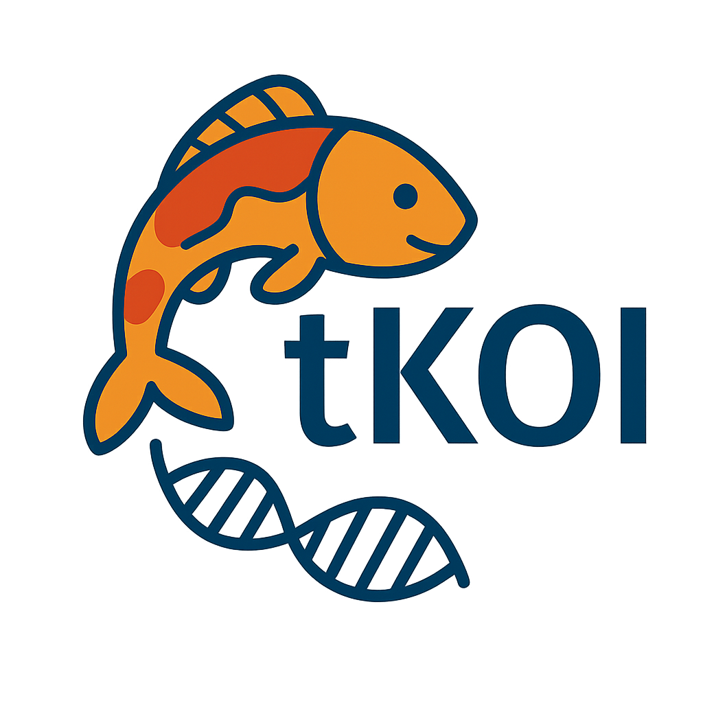
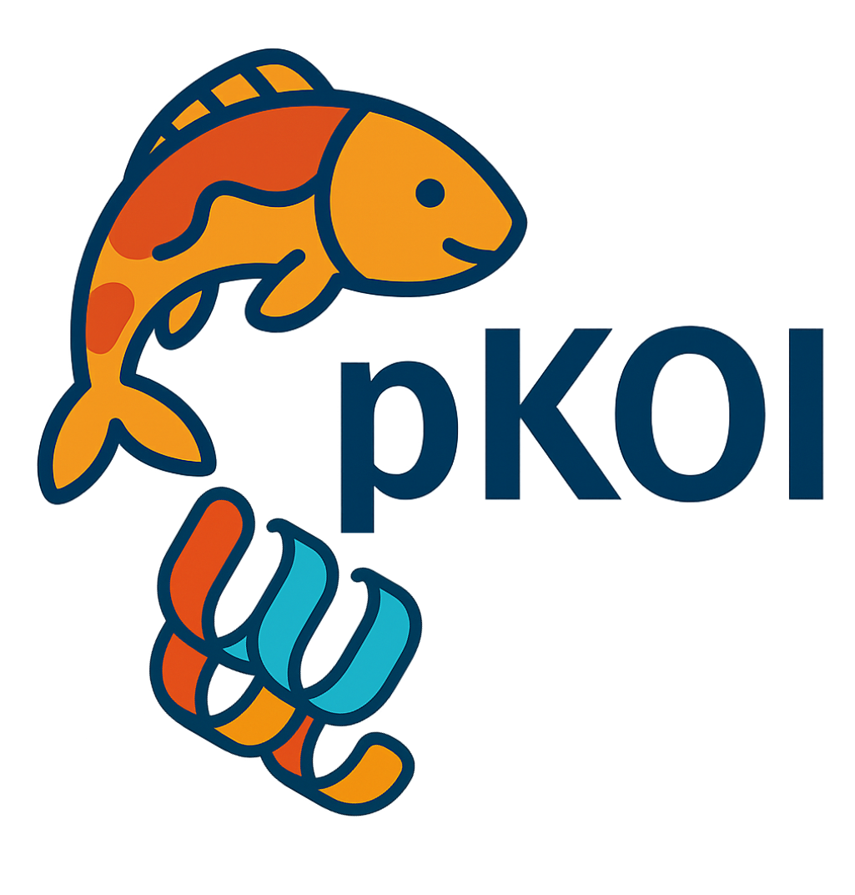
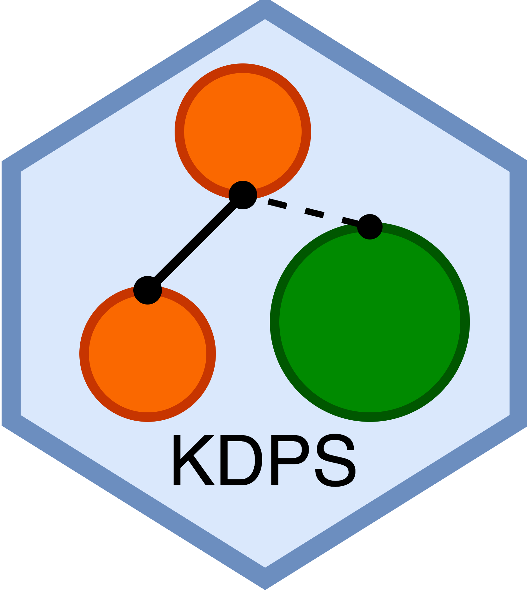
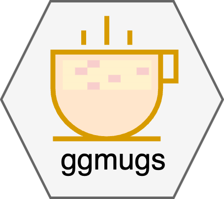
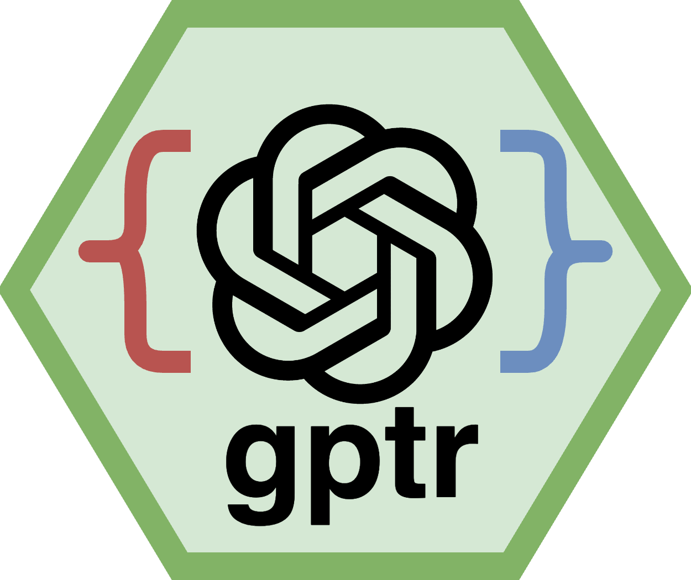
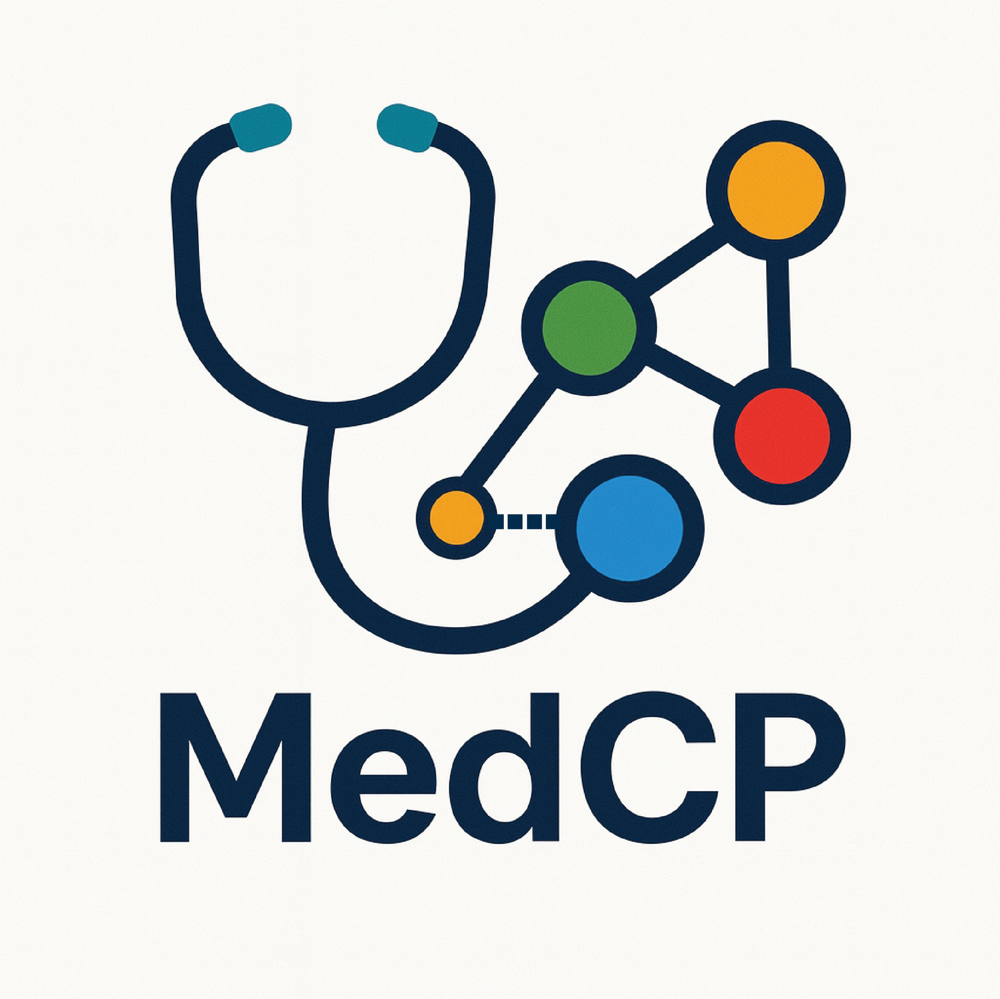

Software
An AI-powered integrated research environment that unifies commercial, institution-hosted, and local AI models for secure biomedical discovery. Enables researchers to coordinate AI agents across clinical databases, biomedical knowledge graphs, and literature while maintaining full data security.
Learn MoreBiomedical Open Knowledge Format. A typed, structured open format that gives AI agents a closed vocabulary of 28 node types and 35 relationship predicates to map any source into a provenance-tracked biomedical knowledge graph. Ships as an open-source Rust stack with a scriptable CLI, an MCP server, and a desktop Studio.
Learn MoreTranscriptomic Knowledge-graph-driven Omics Integration for Human Pathway Analysis. Combines transcriptomic data with a human-specific biological knowledge graph for network-aware enrichment, functional interpretation, and gene prioritization via personalized PageRank.
Documentation
Proteomic Knowledge-graph-driven Omics Integration. A network-based enrichment analysis tool integrating differential proteomics data with a heterogeneous biological knowledge graph, using personalized PageRank to prioritize genes, diseases, pathways, and cell types.
Documentation
Kinship Decouple and Phenotype Selection. Resolves cryptic relatedness in genetic studies using a phenotype-aware approach, retaining subjects with relevant traits while pruning related individuals based on kinship or IBD scores.
Documentation
A grammar-of-graphics approach for visualizing summary statistics from multiple GWAS datasets. Offers flexible, extensively customizable tools for illustrating complex genetic associations and comparative analysis across studies.
View on CRAN
Interface for the Neo4j Bolt Protocol. Enables querying, extracting, and processing large-scale network data from Neo4j databases with efficient retrieval, batch processing, and seamless conversion to R data frames.
View on CRANAn R interface with the ChatGPT API. Provides a convenient, accessible bridge to OpenAI's language models for natural language processing tasks within the R ecosystem.
View on CRAN
Transforms Claude Desktop into a medical AI assistant with secure, local access to electronic health records and biomedical knowledge graphs. Allows healthcare professionals and researchers to process sensitive patient data on-device while leveraging comprehensive medical knowledge for clinical decision support.
View on GitHub
A WYSIWYG Markdown editor for researchers, data scientists, and AI engineers. Renders Markdown formatting live as you type while keeping files as plain, readable Markdown. Supports KaTeX math, Mermaid diagrams, syntax highlighting, 30+ themes, multi-tab/window functionality, and export to HTML and PDF.
Learn More